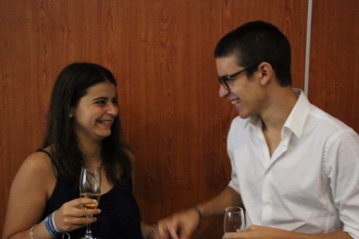
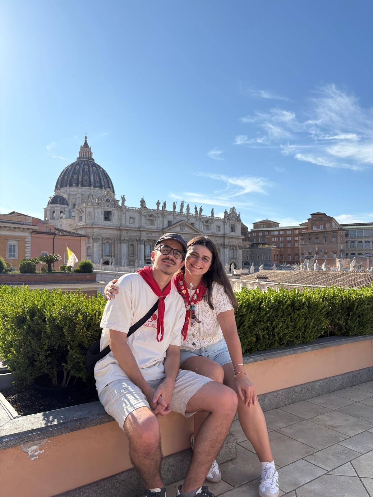
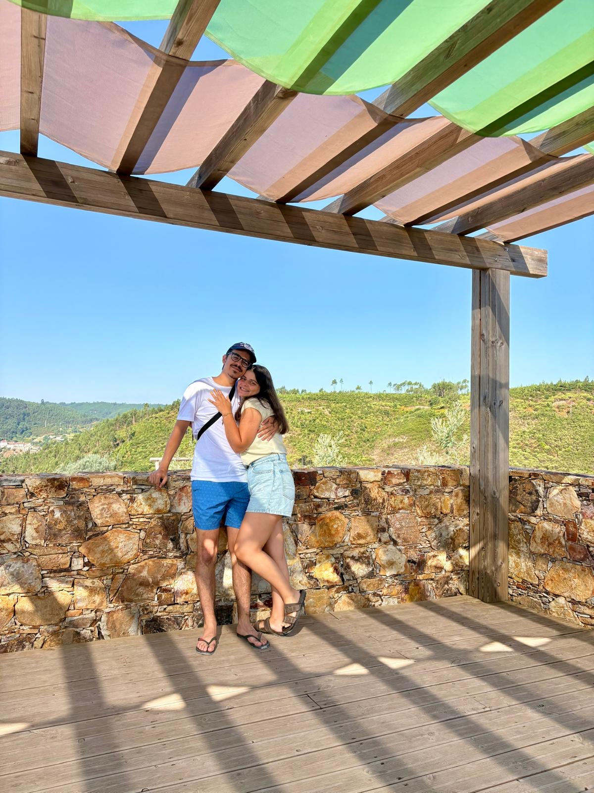

Há histórias que começam sem fazer barulho e acabam por mudar tudo. Esta é a nossa, contada em três capítulos e com o coração já a caminho do grande dia.

Conhecemo-nos através de amigos comuns e desde essa noite não mais nos largámos. Foi simples, foi certo.

Anos de cumplicidade, viagens, mudanças e conquistas — sempre lado a lado, a construir algo nosso.

Num momento simples do dia a dia, sem grande cerimónia — porque era exatamente assim que fazia sentido para nós.